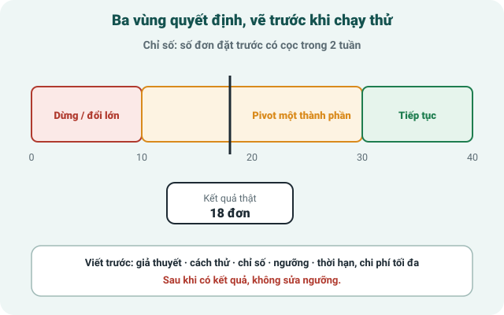

K3 · Giải quyết vấn đề và ra quyết định › Bậc 4 Thành thạo
Thử nghiệm có tiêu chí và quyết định pivot
Bài này làm Tờ 2: Phiếu thử nghiệm. Mẫu in. Bài dùng 3 giả thuyết ở Tờ 1. Cách quyết khi thiếu thông tin có ở bài Quyết định khi thiếu thông tin (N4).
1. Mục tiêu
- Thiết kế thử nghiệm rẻ có chỉ số, ngưỡng, thời hạn và chi phí tối đa, viết trước khi chạy.
- Quyết một trong ba hướng: tiếp tục, pivot hoặc dừng, có lý do.
2. Khởi động truy xuất
- Ba giả thuyết của Tờ 1 là gì?
- Vì sao câu "Bạn có mua không?" cho kết quả kém tin cậy?
Đáp án
- Khách hàng; vấn đề; mức sẵn lòng trả.
- Vì nó hỏi về tương lai. Người nghe thường lịch sự trả lời có. Nên hỏi về việc họ đã làm.
Xem lại: Khám phá khách hàng.
3. Giải thích
Phỏng vấn cho bạn biết vấn đề có thật không. Thử nghiệm cho bạn biết khách có hành động không: đặt trước, trả tiền, quay lại.
Bước 1. Chọn giả thuyết rủi ro nhất. Đó là giả thuyết mà nếu sai, cả ý tưởng sụp đổ. Thường là giả thuyết sẵn lòng trả.
Bước 2. Chọn cách thử rẻ nhất. Ví dụ: nhận đặt trước có cọc; bán thử một tuần ở một điểm; làm thủ công trước khi làm phần mềm.
Bước 3. Viết tiêu chí trước khi chạy. Đây là bước dễ bỏ qua nhất.
Tờ 2. Phiếu thử nghiệm
- Giả thuyếtCâu có thể sai, lấy từ Tờ 1.
- Cách thửViệc rẻ nhất cho thấy khách có hành động.
- Chỉ sốĐếm hành động, không đếm lời khen.
- NgưỡngTừ mức nào thì tiếp tục, pivot hoặc dừng.
- Thời hạn, chi phí tối đaHết hạn hoặc hết tiền thì quyết.
Vì sao phải viết trước? Sau khi có kết quả, người ta dễ tự thuyết phục rằng "gần đạt cũng được". Ngưỡng viết trước giữ bạn trung thực với chính mình.

Bước 4. Quyết định.
- Tiếp tục: đạt ngưỡng. Chuyển sang giả thuyết rủi ro tiếp theo.
- Pivot: đổi một thành phần, giữ phần còn lại. Thành phần có thể là khách hàng, vấn đề, giải pháp, kênh bán hoặc giá.
- Dừng: kết quả rất thấp, và không còn thành phần nào đáng đổi.
Pivot không phải là thất bại. Đó là dùng điều đã học để đổi đúng một chỗ.
4. Ví dụ tại nơi làm việc Việt Nam
Tình huống giả định. Anh Long ở Bát Tràng muốn bán bộ ấm chén gốm vẽ tay theo yêu cầu cho công ty làm quà Tết.
Giả thuyết rủi ro nhất: phòng hành chính các công ty sẵn lòng trả 900.000 đồng mỗi bộ, đặt từ 20 bộ.
Anh không làm website. Anh làm 3 mẫu, chụp ảnh, rồi gửi cho 40 phòng hành chính quen qua bạn bè.
Phiếu thử nghiệm, viết trước: chỉ số là số công ty đặt cọc 30%. Thời hạn 3 tuần. Chi phí tối đa 5 triệu đồng. Từ 6 công ty trở lên: tiếp tục. Từ 2 đến 5: pivot. Dưới 2: dừng.
Kết quả: 3 công ty đặt cọc. Nhưng 9 công ty hỏi có bộ rẻ hơn, khoảng 400.000 đồng không.
Kết quả rơi vào vùng pivot. Anh giữ khách hàng và kênh bán, chỉ đổi giải pháp: thêm dòng cốc in logo, giá thấp hơn. Anh viết Phiếu thử nghiệm mới cho dòng này.
Vì sao cách này tốt: thử rẻ trước khi đầu tư lò và nhân công. Ngưỡng viết trước nên anh không tự an ủi "3 công ty là được rồi".
5. Thực hành
Tình huống giả định. Chị My muốn mở lớp dạy nấu ăn cuối tuần cho nhân viên văn phòng ở Đà Nẵng, học phí 600.000 đồng một buổi.
Viết một Phiếu thử nghiệm đủ 5 ô. Nêu bạn sẽ làm gì nếu kết quả rơi vào vùng pivot.
Gợi ý 1
Cách thử rẻ: mở đăng ký có cọc cho một buổi học thử, trước khi thuê bếp dài hạn.
Gợi ý 2
Nếu pivot, hãy chọn đổi một thành phần. Ví dụ đổi giá, đổi khung giờ, hoặc đổi nhóm khách.
Lời giải mẫu
- Giả thuyết: nhân viên văn phòng ở Hải Châu sẵn lòng trả 600.000 đồng cho một buổi học 3 giờ sáng thứ Bảy.
- Cách thử: đăng lớp học thử trong 3 nhóm cư dân và nhóm công ty; nhận cọc 200.000 đồng.
- Chỉ số: số người đặt cọc.
- Ngưỡng: từ 12 người: tiếp tục. Từ 5 đến 11: pivot. Dưới 5: dừng ý tưởng này.
- Thời hạn, chi phí tối đa: 2 tuần; 3 triệu đồng tiền quảng cáo và in ấn.
- Nếu pivot: giữ khách hàng, đổi giải pháp thành lớp 90 phút buổi tối giá 350.000 đồng, rồi thử lại.
(Thông tin là giả định.)
6. Tự kiểm tra
Chọn đáp án. Mỗi lựa chọn đều có giải thích.
Câu 1. Chỉ số nào tốt nhất cho thử nghiệm giả thuyết sẵn lòng trả?
-
Chưa đúng. Bấm thích không tốn gì. Nó không cho thấy khách sẽ trả tiền.
-
Đúng. Đúng. Đặt cọc là hành động có tốn tiền, gần với việc mua thật.
-
Chưa đúng. Lời hứa về tương lai kém tin cậy hơn hành động có tốn tiền.
Câu 2. Ngưỡng là 30 đơn cọc mới tiếp tục. Kết quả 27 đơn. Bạn nói "gần đạt rồi, tiếp tục thôi". Vấn đề là gì?
-
Chưa đúng. Nếu đổi ngưỡng sau khi thấy kết quả, ngưỡng không còn tác dụng.
-
Đúng. Đúng. Ngưỡng viết trước để giữ bạn trung thực. 27 rơi vào vùng nào thì làm theo vùng đó.
-
Chưa đúng. Chạy lại mãi để đạt số mong muốn là tự lừa mình, và tốn tiền.
Câu 3. Kết quả thử rơi vào vùng pivot. Cách pivot nào đúng tinh thần bài học?
-
Chưa đúng. Đổi nhiều thứ một lúc thì không biết điều gì tạo ra kết quả mới.
-
Đúng. Đúng. Pivot là đổi một thành phần, giữ phần còn lại, rồi kiểm lại.
-
Chưa đúng. Đây là làm thêm cùng một việc, không phải pivot.
Câu 4. Nghiên cứu của Camuffo và cộng sự (2020) với 116 startup ở Ý cho thấy điều gì?
-
Chưa đúng. Nghiên cứu không thấy nhóm này bỏ cuộc nhiều hơn ở giai đoạn đầu.
-
Đúng. Đúng. Đây là kết quả chính được nêu trong tóm tắt nghiên cứu.
-
Chưa đúng. Nghiên cứu thấy có khác biệt về kết quả và về số lần pivot.
7. Phản tư
- Bạn đã từng tiếp tục một việc vì "đã lỡ bỏ nhiều công sức" chưa? Ngưỡng viết trước có giúp gì không?
- Trong ý tưởng của bạn, thành phần nào bạn ít muốn đổi nhất? Vì sao?
8. Áp dụng thật
Trong 7 ngày tới, viết Tờ 2 cho giả thuyết rủi ro nhất của bạn. Nhờ một người khác đọc ngưỡng trước khi chạy. Bắt đầu thử nghiệm.
Mức bằng chứng. Camuffo, Cordova, Gambardella và Spina (2020), Management Science 66(2): thử nghiệm ngẫu nhiên với 116 startup ở Ý, theo dõi khoảng một năm. Nhóm được dạy cách đặt giả thuyết và kiểm như nhà khoa học có kết quả tốt hơn và pivot nhiều hơn. Nhóm này không bỏ cuộc nhiều hơn ở giai đoạn đầu. Camuffo và cộng sự (2024), Strategic Management Journal 45(6), mở rộng hướng nghiên cứu này. Năm bước của Tờ 2 và ba vùng ngưỡng là cách làm do site đề xuất, dựa trên tinh thần của các nghiên cứu trên.
9. Siêu dữ liệu
| skill | K3 · Giải quyết vấn đề và ra quyết định |
|---|---|
| level | Bậc 4 · Thành thạo |
| group | N7 |
| framework_map | EntreComp: Coping with uncertainty, ambiguity and risk; Learning through experience; WEF: Analytical thinking; CSfW: 3b Make decisions; SkillsFuture CCS: Decision Making; NACE: Critical Thinking (chỉ dẫn chiếu) |
| updated | 2026-11-14 |
Hoàn thành bài
Đánh dấu đã học để site gợi ý lịch ôn sau 1, 3 và 7 ngày. Dữ liệu chỉ lưu trên máy của bạn.
Lịch ôn gợi ý: